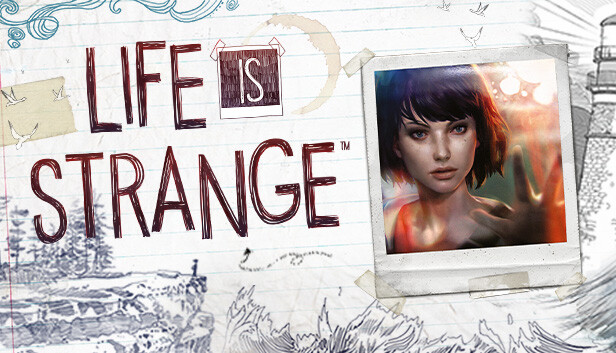

Life Is Strange
Life is Strange – epizodyczna komputerowa gra przygodowa o charakterze fikcji interaktywnej, wyprodukowana przez Dontnod Entertainment i wydana przez Square Enix.
Fabuła gry śledzi poczynania Maxine Caulfield, młodej adeptki fotografii, która odkrywa, że potrafi w dowolnym momencie cofnąć czas, co sprawia, że wszystko, co zrobi, wywołuje efekt motyla. Gra składa się z pięciu odcinków, które wydawane były co około dwa miesiące, a pierwszy z nich, zatytułowany Chrysalis, wydano 30 stycznia 2015
Gra porusza tematykę tożsamości, tego, co ją kształtuje, a także pamięci, ukazuje nostalgię nastolatki i zmagania z samym sobą.